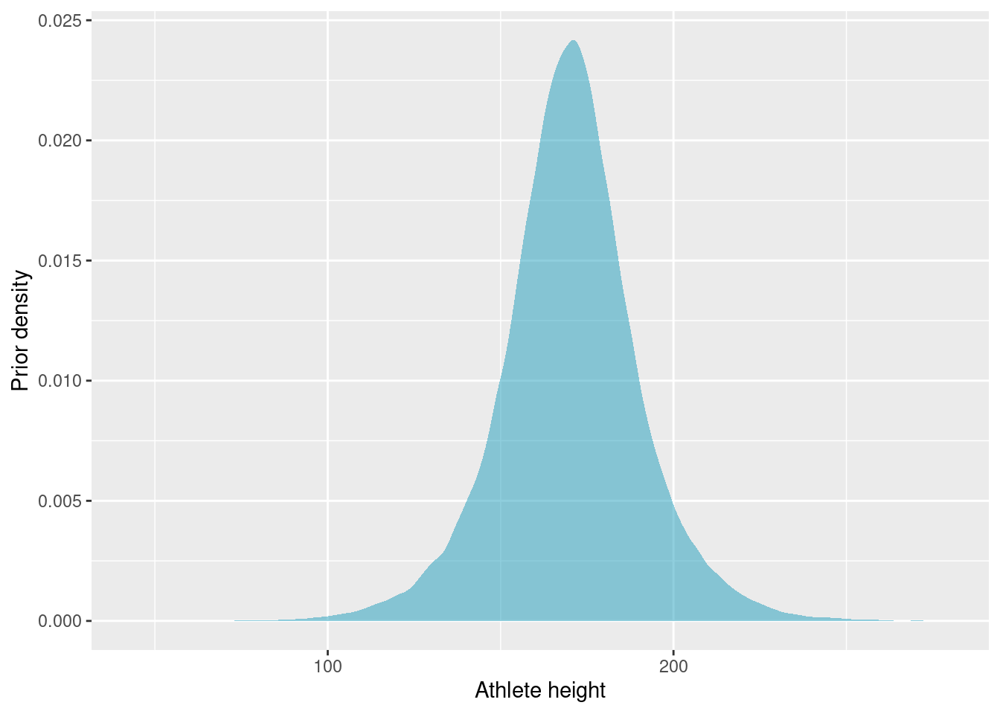
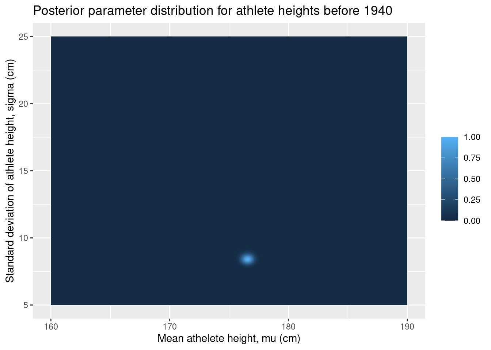
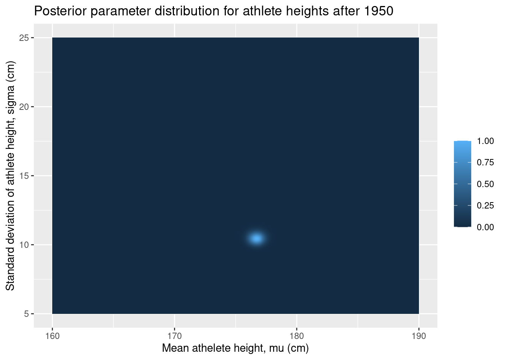
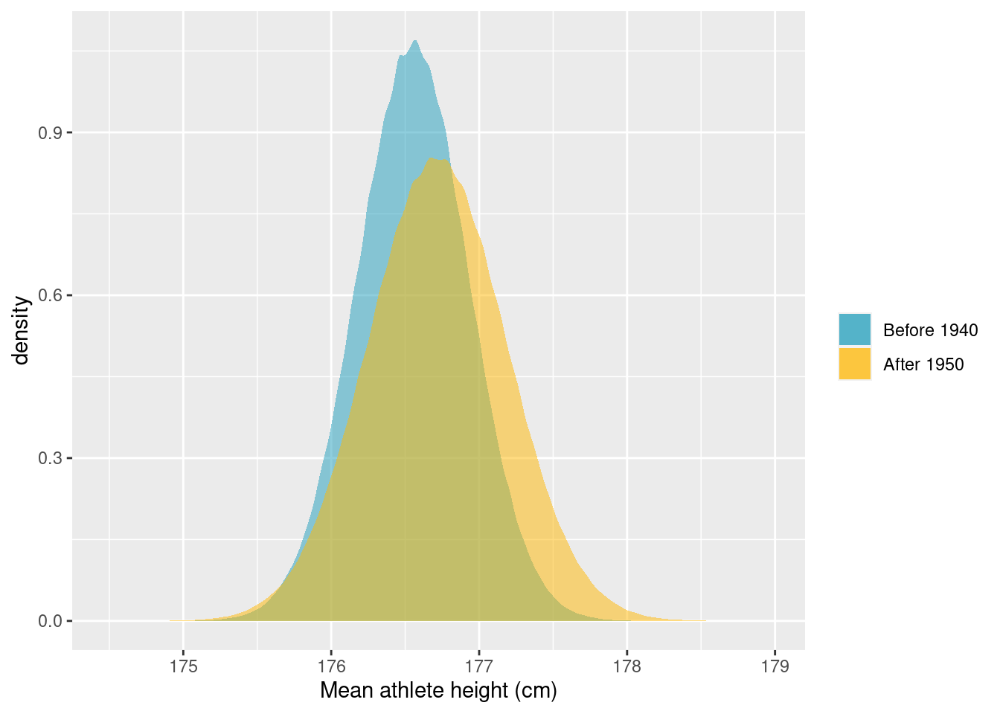
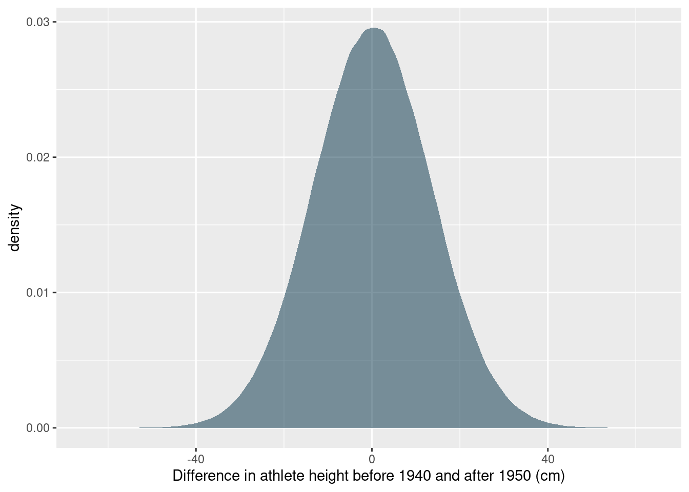

Olympic Athletes over Time - A Tidy Bayesian Data Exploration
It is the Olympics and thus the perfect time to look at some Olympic data. This set of data is part of the data provided for Tidy Tuesday 2021-07-27 and was originally scraped by GitHub user rgriff23. It is a really cool set of data and I thought it would be the perfect stage to show off how I like to use R and the Tidyverse for numeric calculations in exploratory Bayesian data analysis.
Let’s get right into it and load in the data.
Data Preparation
tt_data <- tidytuesdayR::tt_load("2021-07-27")head(tt_data$olympics)## # A tibble: 6 × 15
## id name sex age height weight team noc games year season city
## <dbl> <chr> <chr> <dbl> <dbl> <dbl> <chr> <chr> <chr> <dbl> <chr> <chr>
## 1 1 A Diji… M 24 180 80 China CHN 1992 … 1992 Summer Barc…
## 2 2 A Lamu… M 23 170 60 China CHN 2012 … 2012 Summer Lond…
## 3 3 Gunnar… M 24 NA NA Denma… DEN 1920 … 1920 Summer Antw…
## 4 4 Edgar … M 34 NA NA Denma… DEN 1900 … 1900 Summer Paris
## 5 5 Christ… F 21 185 82 Nethe… NED 1988 … 1988 Winter Calg…
## 6 5 Christ… F 21 185 82 Nethe… NED 1988 … 1988 Winter Calg…
## # … with 3 more variables: sport <chr>, event <chr>, medal <chr>The data holds statistics about athletes that participated in Olympic Games, both summer and winter, from 1896 to 2016. There are so many great stories to be told with such an extensive set of data, but here I have chosen to focus on the height data, as it offers a great opportunity to do some simple exploratory Bayesian data analysis and to do so within the great structure of Tidyverse.
In order to have a goal to work towards, let’s decide to explore the difference in the height of athletes before and after the 1940s. I’ll clean the data a bit and split it into into those two groups.
olympics_data <- tt_data$olympics %>%
dplyr::filter(!is.na(height), !is.na(weight), season == "Summer") %>%
dplyr::distinct(id, .keep_all = TRUE) %>%
dplyr::mutate(
div = dplyr::case_when(
year < 1940 ~ "before",
year > 1950 ~ "after",
TRUE ~ NA_character_
)
) %>%
dplyr::filter(!is.na(div))Data Model and Priors
I am assuming that athlete height is normally distributed with mean and standard deviation parameters that can be estimated:
\[h_i \sim {\sf Normal}(\mu, \sigma)\]
Before looking at the data, we should determine some sensible priors. I think that the mean athlete height should be somewhere in the range of 150 to 190 cm, and I think that it is possible, but quite unlikely, to fall outside of this range. This translates to a normal prior centered at 170 cm and a 10 cm standard deviation. That way approximately 95% of the probability falls within the 150 to 190 cm range.
\[\mu \sim {\sf Normal}(170, 10)\]
I expect quite a large standard deviation on athlete height. The Olympic games has sports that favour tall athletes and sports that favour short athletes. I am, however, fairly confident that the majority of heights will fall within 60 cm on either side of the mean height. I’ll go for a flat, uniform, prior. Often it makes sense to use a log-normal prior for the standard deviation but, in this case, I would like to allow less regularisation on larger standard deviations.
\[\sigma \sim {\sf Uniform}(0, 30)\]
Let’s simulate some prior samples, to ensure that the priors we have chosen are realistic.
n_prior_samples <- 1e5
tibble::tibble(
sample_mu = rnorm(n_prior_samples, 170, 10),
sample_sigma = runif(n_prior_samples, 0, 30),
prior_pred = rnorm(n_prior_samples, sample_mu, sample_sigma)
) %>%
ggplot(aes(x = prior_pred)) +
geom_density(fill = "#219ebc", alpha = 0.5, colour = FALSE) +
labs(x = "Athlete height", y = "Prior density")
Our prior belief of athlete height puts almost all probability in the range 100 to 250 cm. The priors might be a bit on the weak side, but we should have enough data that this is not too consequential.
Bayesian Data Analysis
Since we only have two parameters, we can simulate the posterior distribution using grid approximation. We will estimate the posterior at 1000 values of mu and sigma, so a total of 10e6 parameter combinations.
I am going to sample 500 athletes from each group. The grid approximation becomes much slower with more data, but 500 examples from each group should be plenty for the question we are exploring.
Once the parameter grid is generated, the grid approximation proceeds in four steps that we repeat for each of our two sets of data 1. The likelihood of data given the two parameters is calculated for each point in the parameter grid 2. The prior probability of each parameter is calculated for each point in the grid 3. We find the product of likelihood and prior (the numerator of Bayes’ Theorem) 4. We estimate the posterior probabilities at every point on the grid
Since we have quite a lot of data, the probabilities are going to be extremely small. In fact, if we try to estimate them directly, we cross the precision boundary of R and everything will just evaluate to 0. Instead we will calculate the log probabilities. This also means that probability products instead become sums.
This is where I find the Tidyverse tools very useful. Instead of keeping simulations in separate vectors, I can build the grid approximation directly in the data frame (tibble) and keep track of the relationship between the elements of the simulation.
n_data <- 500
n_per_param <- 1e3
# Sample data
heights_before <- olympics_data %>%
dplyr::filter(div == "before") %>%
dplyr::slice_sample(n = n_data) %>%
dplyr::pull(height)
heights_after <- olympics_data %>%
dplyr::filter(div == "after") %>%
dplyr::slice_sample(n = n_data) %>%
dplyr::pull(height)
# Build grid approximation
grid <- tibble::tibble(
# These are the grid, not the priors
mu = seq(from = 160, to = 190, length.out = n_per_param),
sigma = seq(from = 5, to = 25, length.out = n_per_param)
) %>%
tidyr::expand(mu, sigma) %>%
dplyr::mutate(
# Log-likelihoods
loglikelihood_before = purrr::map2_dbl(
mu,
sigma,
~ sum(dnorm(mean = .x, sd = .y, x = heights_before, log = TRUE))
),
loglikelihood_after = purrr::map2_dbl(
mu,
sigma,
~ sum(dnorm(mean = .x, sd = .y, x = heights_after, log = TRUE))
),
# Prior probabilities
prior_p_mu = dnorm(mu, mean = 170, sd = 10, log = TRUE),
prior_p_sigma = dunif(sigma, min = 0, max = 30, log = TRUE),
# Numerator of Bayes' theorem
logproduct_before = loglikelihood_before + prior_p_mu + prior_p_sigma,
logproduct_after = loglikelihood_after + prior_p_mu + prior_p_sigma,
# Posterior probabilities
posterior_before = exp(logproduct_before - max(logproduct_before)),
posterior_after = exp(logproduct_after - max(logproduct_after))
)In the posterior calculation, I have chosen to subtract the max log-product from the log-product vector before exponentiating and thus moving from log-probabilities to probabilities. To get samples from the true posterior, we would have had to exponentiate the log-products and then divide each product by the sum of the products (the denominator of Bayes’ Theorem). The log-products are very small (large negative numbers), however, and exponentiating them would cause all of them to evaluate to zero. Instead, I opted to subtract the max log-product, which will bring the log-products much closer to zero and yield a number that can be exponentiated. This does mean that the estimated posterior is not the true posterior, but rather proportional to it. We could try to fix it, but this will work fine for what I intend to do.
Let’s have a look at the posterior parameter distributions. Since we only have two parameters and since we have everything on a neat grid, we can use ggplot2’s geom_tile to draw a nice contour plot of the joint distribution of the parameters.
ggplot(grid, aes(x = mu, y = sigma, fill = posterior_before)) +
geom_tile() +
labs(
x = "Mean athelete height, mu (cm)",
y = "Standard deviation of athlete height, sigma (cm)",
fill = "",
title = "Posterior parameter distribution for athlete heights before 1940"
)
ggplot(grid, aes(x = mu, y = sigma, fill = posterior_after)) +
geom_tile() +
labs(
x = "Mean athelete height, mu (cm)",
y = "Standard deviation of athlete height, sigma (cm)",
fill = "",
title = "Posterior parameter distribution for athlete heights after 1950"
)
There is not much going on in these plots, but this is actually great. It means that the data has overwhelmed our relatively weak priors and produced a narrow posterior distribution.
It looks like there is some difference between the two distributions, but this does not necessarily translate to a difference in athlete height. For that, we need to explore the posterior predictive distributions.
To produce the posterior predictive distributions, we sample mus and sigmas from the grid with replacement and weighted by the posterior probabilities. Using these sampled parameters, we can simulate samples from the posterior predictive distribution using the random normal generator. We can estimate parameter differences by taking the difference between posterior predictive samples. Again, I like to keep everything aligned in a tibble.
n_post_pred_samples <- 1e6
post_pred <- tibble::tibble(
# Samples of mu
post_samples_mu_before = grid %>%
dplyr::slice_sample(
n = n_post_pred_samples,
weight_by = posterior_before,
replace = TRUE
) %>%
dplyr::pull(mu),
post_samples_mu_after = grid %>%
dplyr::slice_sample(
n = n_post_pred_samples,
weight_by = posterior_after,
replace = TRUE
) %>%
dplyr::pull(mu),
# Samples of sigma
post_samples_sigma_before = grid %>%
dplyr::slice_sample(
n = n_post_pred_samples,
weight_by = posterior_before,
replace = TRUE
) %>%
dplyr::pull(sigma),
post_samples_sigma_after = grid %>%
dplyr::slice_sample(
n = n_post_pred_samples,
weight_by = posterior_after,
replace = TRUE
) %>%
dplyr::pull(sigma),
# Posterior predictive samples
post_pred_before = rnorm(
n = n_post_pred_samples,
mean = post_samples_mu_before,
sd = post_samples_sigma_before
),
post_pred_after = rnorm(
n = n_post_pred_samples,
mean = post_samples_mu_after,
sd = post_samples_sigma_after
),
# Posterior predictive samples for the difference
post_pred_diff = post_pred_after - post_pred_before,
)Let’s go ahead and plot the distributions of mean height and the posterior predictive distribution for the difference in height.
ggplot(post_pred) +
geom_density(
aes(x = post_samples_mu_before, fill = "Before 1940"),
alpha = 0.5,
colour = FALSE
) +
geom_density(
aes(x = post_samples_mu_after, fill = "After 1950"),
alpha = 0.5,
colour = FALSE
) +
scale_fill_manual(
name = "",
values = c("Before 1940" = "#219ebc", "After 1950" = "#ffb703")
) +
labs(x = "Mean athlete height (cm)")
ggplot(post_pred, aes(x = post_pred_diff)) +
geom_density(fill = "#023047", alpha = 0.5, colour = FALSE) +
labs(x = "Difference in athlete height before 1940 and after 1950 (cm)")
While it seems that there are some differences in the distribution of heights before and after the 1940s, the posterior predictive distribution for the difference in heights places the most probability in a broad interval that includes 0. So it does not seem reasonable to conclude that there is a difference. For good measure, let’s calculate the highest probability density interval that includes 89% of the probability:
coda::HPDinterval(coda::as.mcmc(post_pred$post_pred_diff), prob = 0.89)## lower upper
## var1 -21.48762 21.55056
## attr(,"Probability")
## [1] 0.89We did not find a difference, but we got to estimate some cool distributions. In practice, grid approximated almost never makes sense to do, but it is a really good example of how I use Tidyverse to alleviate some of the organisational headache when doing numeric calculations for Bayesian statistics and other applications.
Anders E. Nielsen
Data Professional & Research Scientist
I apply modern data technology to solve real-world problems. My interests include statistics, machine learning, computational biology, and IoT.